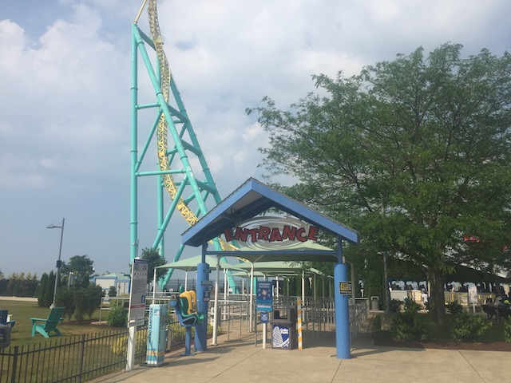
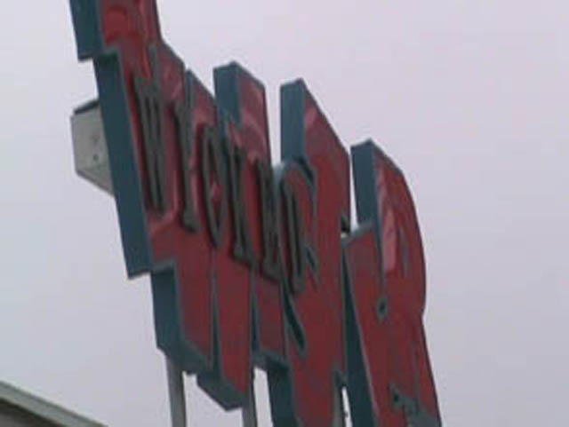

| |

Wicked Twister Review
For todays review, we're going to travel back in time to review Cedar Point's dead Impulse coaster. This bummed me not only because I'm a big fan of Impulse coasters, but this was one of the few Double Twisting Impulse Coasters and the best of the bunch. So losing this one is a real bummer. But regardless, hop on in. The first launch isn't too fast, but that's ok for now. Because now you'll pulling out towards the sky and twisting a little. While we don't come anywhere close to the top, it's ok for now. You then go back through the station and into the back spike. Now this back spike is diffrent from the back spike on most Impulse coasters as it too, spirals up into the sky. Now doing the spiral backwards, that is really freaking cool! Then you fall back down and FLY through the station. Then we go back up the first spike. This time, it feels like we are going to FLY right off the spike (Especially if you're up in the front row). We stop right at the top of the tower, getting an ever so lovely view of the clouds. Then we twist and fall back down the spike and FLY right on through the station and into the back spiral. And again, it's freaking awesome. Anyways, we head back down the spike slown down through the station as we head back into the first spike. We don't get that high up the first spike. But enjoy it hile it lasts, because when we fall from this spike, we fall back into the station. I really enjoyed Wicked Twister. It's a real shame that this ride wasn't relocated. Well, at least ride the other Impulse coasters if one is at a park near you.
8/10
Location: Cedar Point
Opened: 2002
Died: September 6, 2021
Built by: Intamin
Last Ridden: June 26, 2018
Wicked Twister Photos






Home
|